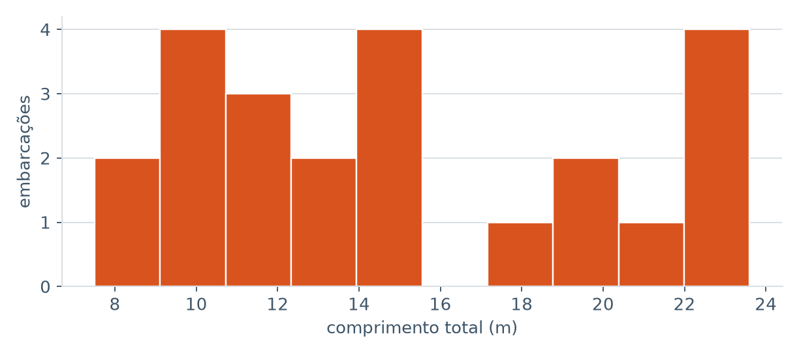

Manual do Baliza
Como usar o sistema de ponta a ponta: da captura no barco, sem sinal, até o laudo do Anexo IV assinado eletronicamente.
Se você só vai fazer a primeira vistoria
- Leia 3. App de campo — abrir a vistoria.
- 4. Checklist e 5. Fotos — o trabalho no barco.
- 7. Parecer e 11. Laudo — fechar e emitir.
O resto pode esperar até você precisar.
1. Antes de começar
O Baliza tem duas partes. O aplicativo de campo, no celular, é onde a vistoria acontece — e funciona sem internet. O painel, no navegador, é onde se acompanham os números, se baixam os laudos e se registra a assinatura.
O que você precisa ter
- Uma conta criada para você no sistema, vinculada ao vistoriador credenciado (a empresa ou a pessoa física registrada no MPA).
- Se você vai assinar laudos: estar cadastrado como responsável técnico, com CPF e número de ART/DHT.
- Para assinar eletronicamente: conta gov.br nível prata ou ouro, ou um certificado ICP-Brasil (e-CPF).
O primeiro login precisa de internet. É a única vez. Depois dele, o app abre e opera offline por tempo indeterminado — inclusive se você ficar dias sem sinal.
2. Perfis e permissões
Cada pessoa tem um perfil, e ele define o que ela pode fazer. Ninguém enxerga dados de outro vistoriador credenciado — o isolamento é aplicado no banco de dados, não apenas na tela.
| Perfil | Pode | Não pode |
|---|---|---|
| admin | Tudo dentro do próprio vistoriador: gerir usuários, atribuir técnicos, emitir laudo, revisar IA. | Ver ou alterar dados de outro vistoriador. Concluir parecer de vistoria que não é sua, se não for o responsável designado. |
| vistoriador | Abrir e conduzir as vistorias em que é o responsável técnico; concluir o parecer; emitir e assinar o laudo. | Concluir parecer de vistoria de outro responsável. |
| tecnico | Apoiar a captura das vistorias atribuídas a ele: checklist, fotos, revisão das sugestões da IA. | Concluir parecer. Emitir laudo. |
| analista | Ler as vistorias do vistoriador e revisar sugestões da IA. | Alterar cadastro, capturar evidência, concluir parecer ou emitir laudo. |
Só o responsável técnico designado na vistoria conclui o parecer. Nem o administrador da conta pode fazê-lo no lugar dele. Quem assina sob ART é quem responde.
3. App de campo
Entrar
Na primeira vez, com internet, informe e-mail e senha. O app guarda seu perfil no aparelho e passa a abrir offline. Sair do app apaga esse cache — e um novo login exigirá rede outra vez.
Tela inicial
Mostra suas vistorias, o estado da sincronização e dois botões: Nova vistoria e o ícone de Cadastros, onde se corrigem armadores e embarcações já registrados.
Abrir uma vistoria
- Toque em Nova vistoria.
- Escolha um armador já cadastrado ou preencha os dados do proprietário (Anexo IV, seção 2).
- Preencha os dados da embarcação (seção 3). Deixe em branco o que não mediu.
- Informe município e UF da vistoria (seção 5) e confirme.
O checklist do Anexo IV é criado junto, já pronto para preencher — e tudo isso funciona sem nenhuma rede.
Dimensões e arqueação bruta não são estimadas. Elas
vêm de medição in loco ou do documento da Autoridade Marítima. O que
você não mediu deve ficar em branco: o laudo imprime
N.A., que é a informação correta. Zero seria uma medida
que ninguém tomou.
4. Checklist do Anexo IV
Cada item tem três respostas:
- C — conforme;
- NC — não conforme;
- N.A. — não se aplica.
Todo item nasce como N.A.. Nada é presumido conforme: o que você não avaliou não vira aprovação por omissão.
Modalidade de pesca
É escolha única, como no formulário oficial: marcar uma desmarca as demais.
Depois do parecer
Concluído o parecer, as marcações ficam travadas e passam a aparecer por extenso — Conforme, Não conforme, N.A. — em vez das siglas. Travado não quer dizer invisível: você continua lendo o que registrou.
5. Fotos e evidências
Duas formas de fotografar
- Câmera na linha do item — o ícone ao lado de cada item do checklist. A foto fica amarrada àquele ponto.
- Foto geral — o botão no rodapé. Serve para a embarcação como um todo.
Fotografar pelo item muda o resultado da análise. A IA pergunta coisas diferentes conforme o que a foto documenta: numa foto do item "urna frigorífica" ela procura equipamentos; numa foto geral, procura o casco e a inscrição. A mesma cena, fotografada solta, costuma render sugestão inútil.
O que cada foto guarda
No instante da captura, ainda offline, o app grava a coordenada, a data e hora, e calcula uma impressão digital do arquivo (hash SHA-256). É isso que permite provar depois que a imagem não foi trocada.
Sem sinal de GPS, a foto é gravada assim mesmo, com o motivo registrado. O laudo declara a ausência de coordenada — posição não é inventada para preencher campo.
Descartar fotos
Em campo se fotografa demais de propósito: repetir a foto é barato, voltar à embarcação não é. Na seção Evidências, marque as caixas das fotos que não quer e toque em Descartar.
O arquivo é apagado do aparelho, liberando espaço, e o registro fica marcado como descartado — com hash, posição e horário preservados. Se você descartar antes de sincronizar, a foto nunca consome seus dados móveis.
Vistoria com laudo já emitido não perde evidência: ali a foto sustenta uma peça assinada.
6. Sugestões da IA
Depois que as fotos sincronizam, o sistema as analisa e devolve sugestões: a inscrição lida no casco, o material, os petrechos e os equipamentos reconhecidos. Elas aparecem no app, na seção Sugestões da IA dentro da vistoria.
Cada cartão mostra
- a foto que originou a sugestão;
- o que a IA afirma — ou que não conseguiu identificar;
- o grau de confiança e qual modelo respondeu;
- três ações: Confirmar, Corrigir e Descartar.
Corrigir pede que você escreva o que está certo — é esse texto que fica registrado, não a resposta do modelo. Descartar também é uma decisão válida e fica gravada.
Enquanto houver sugestão sem revisão, o laudo não pode ser emitido. Confirmar uma sugestão não marca item do checklist nem influencia o parecer: quem preenche o checklist é você.
Se não houver sugestão alguma, a seção nem aparece — em campo, antes de sincronizar, não existe análise, e a tela não inventa pendência.
7. Parecer técnico
No fim da tela da vistoria estão Aprovar e Reprovar. Só o responsável técnico designado naquela vistoria vê os botões ativos; para os demais, a tela explica por quê.
O sistema registra quem concluiu e quando. Depois disso, as marcações do checklist ficam travadas.
8. Sincronização
Acontece sozinha, sempre que houver rede. São duas filas independentes: os dados do formulário sobem primeiro; as fotos vão por outra fila, para que um arquivo grande não trave o resto.
O painel de sincronização
Na tela inicial, ele diz quantas fotos ainda não subiram e se há alguma falha. Duas situações diferentes:
- Aguardando rede — normal. Some quando houver sinal.
- Fila travada — o servidor recusou alguma operação por violação de regra. Não se resolve esperando; o motivo aparece na tela.
9. Corrigir cadastros
No ícone Cadastros da tela inicial estão as embarcações e os armadores já registrados. Toque em um para corrigir.
Apagar um campo numérico o deixa não informado — nunca zero. Se a embarcação já teve laudo emitido, a tela avisa: corrigir o cadastro não altera o PDF assinado, que continua dizendo o que dizia quando foi emitido.
O perfil analista não altera cadastro.
10. Painel de gestão
No navegador, entre com a mesma conta do app. Você verá apenas os dados do seu vistoriador.




Como ler os números
- Taxa de aprovação — calculada sobre as vistorias concluídas, não sobre o total. Vistorias pendentes aparecem ao lado, na mesma barra: um número que esconde o que ainda não foi julgado parece mais firme do que é.
-
Sem nenhuma vistoria concluída, a taxa aparece como
—e não como 0%. Zero significaria que ninguém foi aprovado, que é outra coisa. - Distribuição da frota — embarcação sem medida fica fora do gráfico. Contá-la como zero criaria barcos de zero metro.
- Mapa — cada ponto é a média das coordenadas das evidências daquela vistoria. Vistoria sem foto georreferenciada não aparece: ponto inventado num mapa é pior que ponto ausente.
Gestão de usuários (só admin)
Permite alterar perfil e situação, vincular uma conta já existente ao vistoriador, e atribuir um técnico a uma vistoria. O sistema recusa rebaixar ou desativar o último admin ativo — sem isso, um clique distraído deixaria a conta sem quem a administre.
11. Laudo
O PDF reproduz o Anexo IV e traz, ao final, o registro fotográfico com a coordenada, o horário e o hash de cada evidência.


Exemplo com dados fictícios — abrir o PDF completo. Uma das fotos está sem coordenada, e o documento declara isso.
O que impede a emissão
Antes de emitir, o sistema confere e lista o que falta. Os motivos mais comuns:
- parecer ainda pendente;
- vistoria sem responsável técnico, ou responsável sem ART/DHT;
- falta município, UF ou data;
- armador ou embarcação sem nome;
- sugestão da IA sem revisão humana.
Versões
Laudo emitido é imutável. Se algo precisa mudar, emita de novo: nasce uma nova versão, com novo número e novo PDF, e a anterior fica preservada. Nenhuma correção apaga o que foi emitido.
Onde encontrar
No painel, seção Laudos emitidos: a lista mostra protocolo, embarcação, versão e o estado da assinatura. Dali se baixa o PDF.
12. Assinatura eletrônica
O sistema não assina por você, e sua chave nunca fica guardada nele. Você assina com seu certificado, e o Baliza confere e registra.
Passo a passo
- No painel, em Laudos emitidos, escolha o laudo e clique em Baixar PDF.
- Assine o arquivo — no assinador gov.br (conta prata ou ouro) ou com seu certificado ICP-Brasil.
- Volte ao painel, escolha o arquivo assinado em Enviar assinados e clique em registrar.
Não reimprima nem converta o PDF. Assine exatamente o arquivo baixado. Reimprimir gera outro documento, que deixa de corresponder ao laudo emitido — e o sistema vai recusá-lo, com razão.
Vários de uma vez
Você pode enviar uma pilha de PDFs assinados sem dizer qual é de qual laudo: cada arquivo encontra o seu pelo conteúdo. Se um for recusado, os outros entram normalmente, e a tela diz o motivo de cada recusa.
O que é conferido
- o arquivo tem assinatura embutida;
- corresponde a um laudo emitido por você;
- nada foi alterado depois de assinado;
- o CPF do certificado é o do responsável técnico daquela vistoria.
A validade jurídica plena pode ser conferida no validador oficial, em validar.iti.gov.br.
13. O que o sistema recusa
Estas recusas não são limitação: cada uma existe para que o laudo continue defensável.
| O sistema recusa | Por quê |
|---|---|
| Emitir laudo com IA não revisada | Sugestão que ninguém julgou não acompanha peça assinada. |
| Parecer de quem não é o responsável | A ART é pessoal. Nem o admin conclui no lugar dele. |
| Alterar laudo emitido | Correção gera nova versão; a anterior é preservada. |
| PDF assinado que não corresponde ao laudo | Inclui documento alterado e assinado depois — vira documento válido de outra coisa. |
| Assinatura de outra pessoa | O certificado tem de ser do responsável daquela vistoria. |
| Conteúdo anexado depois da assinatura | É o modo clássico de fraudar PDF: mudar o que a página mostra sem tocar no que foi assinado. |
| IA preencher dimensões ou arqueação | Vêm de medição ou do documento oficial. Nunca de estimativa. |
| Enviar foto real a IA que treina com os dados | Proteção de dado pessoal; a liberação é explícita. |
14. Problemas comuns
| Situação | O que fazer |
|---|---|
| Não consigo entrar pela primeira vez | O primeiro login exige internet. Se a mensagem falar em perfil não liberado, peça ao admin do seu vistoriador para ativar seu acesso. |
| Marquei C/NC e parece que sumiu | Depois do parecer concluído as marcações ficam travadas e aparecem por extenso, não como botões. Nada se perdeu. |
| A câmera do item não abre | Verifique se a vistoria ainda tem itens carregados e se o app tem permissão de câmera no aparelho. |
| As fotos não sobem | Sem rede, é o esperado. Se o painel indicar fila travada, o motivo aparece ali — é violação de regra, não falta de sinal. |
| Não aparece sugestão da IA | A análise só ocorre depois que a foto sincroniza. Sem rede, não há análise — e isso não impede a vistoria. |
| Meu PDF assinado foi recusado | Confira se assinou o arquivo baixado do sistema, sem reimprimir, e se o certificado é o do responsável técnico daquela vistoria. |
| Não consigo emitir o laudo | A tela de prontidão lista exatamente o que falta. Resolva os itens e emita de novo. |
15. Glossário
| Anexo IV | Relatório de Vistoria de Embarcação de Pesca, formulário da Portaria MPA nº 397/2024. É o que o laudo reproduz. |
| PROPESC | Programa a que a vistoria se refere. |
| ART / DHT | Registro de responsabilidade técnica do profissional que assina o laudo. |
| Armador | Proprietário da embarcação. É dado cadastral: não acessa o sistema. |
| Evidência | Foto capturada na vistoria, com coordenada, horário e hash. |
| Hash SHA-256 | Impressão digital de um arquivo. Se um único byte mudar, o hash muda — é o que prova que a foto é a mesma. |
| Veredito humano | Sua decisão sobre a sugestão da IA: confirmar, corrigir ou descartar. |
| Protocolo | Identificador do laudo emitido, com a versão. Muda a cada nova versão. |